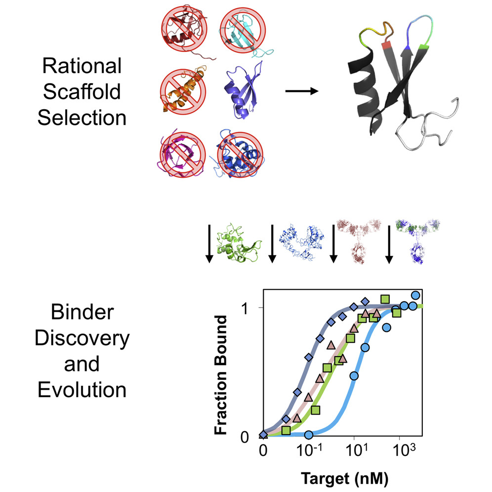

This is my personal webpage! Below is some information about myself, although you can find more on my LinkedIn page.
I'm a biotechnology enthusiast and I've included some handy resources on biomedical research and biotech investing on this site. If you have any suggestions, please let me know!
Background
I'm the son of boat people. My parents met in Minnesota and that's where I was raised. I have a younger sister who is attending the University of Texas.
Education
Stanford University
Doctor of Philosophy in Bioengineering
Minor in Statistics
University of Minnesota
Bachelor of Biomedical Engineering, summa cum laude
Bachelor of Science in Physics
Minors in Mathematics and Chemistry
Publications
Kruziki et al. A 45-amino-acid scaffold mined from the PDB for high-affinity ligand engineering. Chemistry & Biology (2015)
This is the first report on the development and use of the Gp2 scaffold for engineering molecular recognition. We systematically explored the Protein Data Bank for proteins which were small, offered solvent accessible loops, lacked disulfides, and likely robust to mutagenesis. From a truncated variant of the T7 phage gene 2 protein, we generated a massive combinatorial library with loops mimicking the diversity of antibody CDRs. We were successful in evolving Gp2 clones which bind to disparate targets, including cancer biomarkers, with high affinity and specificity while retaining or even improving on stability.